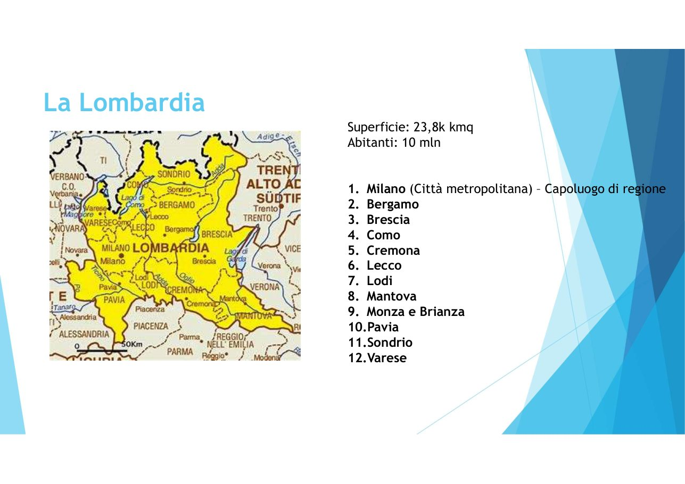
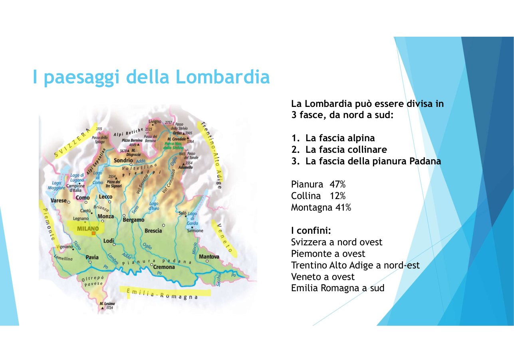
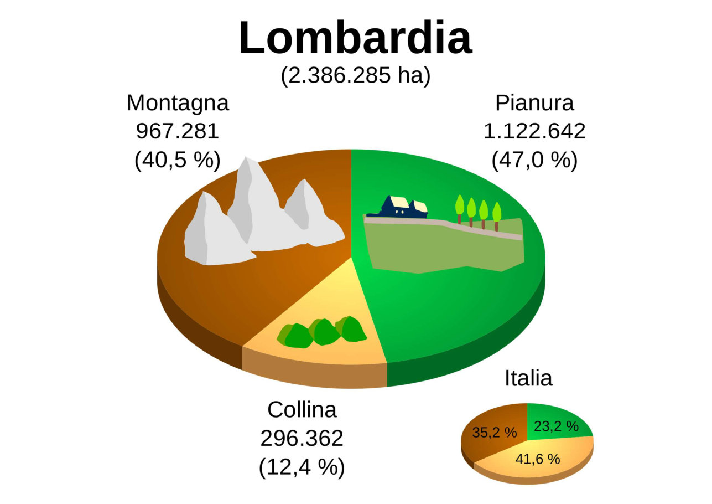
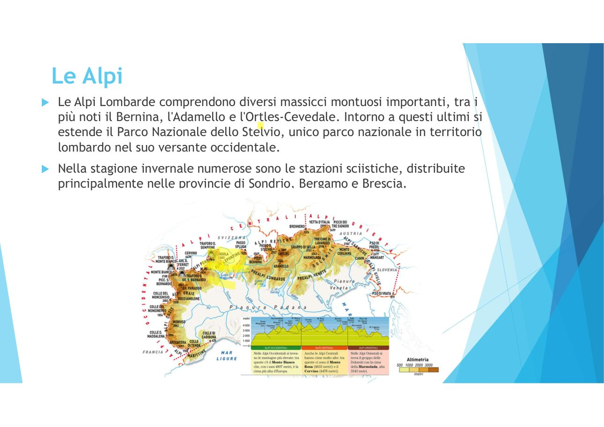
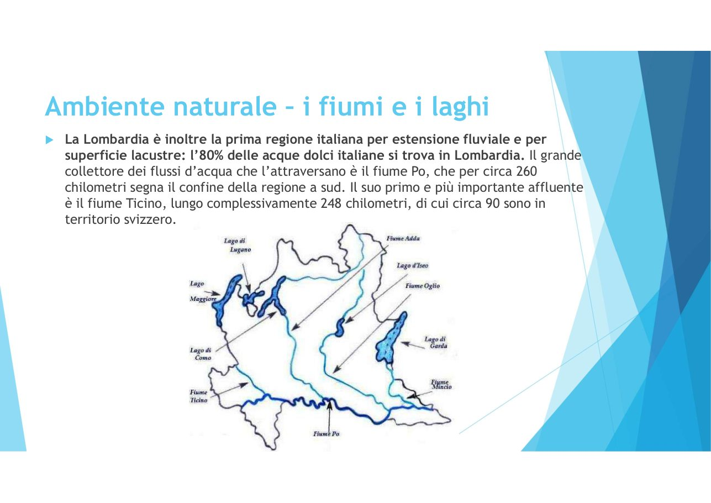

Numeri, confini, le tre fasce, le Alpi, i fiumi e i laghi
📌 Come si usa: guarda prima la cartina, poi premi 🔊 Ascolta su ogni riquadro. Non serve leggere tutto: ascolta e guarda.

| Superficie | circa 23.800 km² |
| Abitanti | circa 10 milioni |
| Capoluogo | MILANO |
| Province | 12 |
Le 12 province sono: Milano (città metropolitana), Bergamo, Brescia, Como, Cremona, Lecco, Lodi, Mantova, Monza e Brianza, Pavia, Sondrio, Varese.

Da nord a sud la Lombardia si divide in 3 fasce:
| Fascia | Quanto territorio |
|---|---|
| 🏔️ Montagna (Alpi) | 41% |
| ⛰️ Collina | 12% |
| 🌾 Pianura Padana | 47% |


Nelle Alpi lombarde ci sono montagne famose: il Bernina (il punto più alto, oltre 4.000 m), l'Adamello e l'Ortles-Cevedale.
Intorno a queste montagne c'è il Parco Nazionale dello Stelvio, uno dei più grandi d'Europa.

La Lombardia ha 5 laghi maggiori e circa 80 laghi minori. Quasi tutti sono di origine glaciale: li hanno scavati gli antichi ghiacciai.
| Lago | Da ricordare |
|---|---|
| Garda | il più grande d'Italia (370 km²), diviso tra Lombardia, Veneto e Trentino. Località: Desenzano, Sirmione, Salò. Pieno di turisti, soprattutto tedeschi. |
| Maggiore (Verbano) | il secondo d'Italia, diviso tra Lombardia, Piemonte e Svizzera. |
| Como (Lario) | il più profondo d'Italia, a forma di Y rovesciata, con Bellagio al centro. Tutto lombardo. |
| Iseo (Sebino) | tra Brescia e Bergamo. Tutto lombardo. |
| Lugano | in parte in Svizzera. |
Anche se è una regione piena di industrie, la Lombardia protegge la sua natura: le aree protette sono il 27% del territorio.
LOMBARDIA
23.800 km² · 10 milioni · capoluogo MILANO
|
_________________|__________________
| | | |
CONFINI 3 FASCE ALPI ACQUE
Svizzera montagna 41% Bernina 80% acque dolci
Piemonte collina 12% Adamello Po · Ticino · Adda
Trentino pianura 47% Stelvio 5 laghi maggiori:
Veneto (E) sci Garda Maggiore
Emilia (S) Como Iseo Lugano
1. Qual è il capoluogo della Lombardia?
2. Quali sono le tre fasce, da nord a sud?
3. Qual è il lago più grande d'Italia? E il più profondo?
4. Quale fiume segna il confine a sud?
5. Con quale regione confina a est?